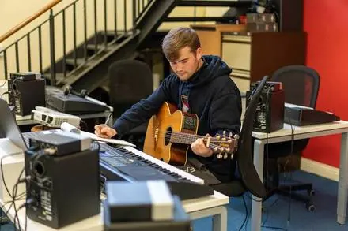

Presenting Music
The culmination: your best work as researcher, creator, and performer, presented as a finished, polished whole.
 ♫
♪
♩
♫
♪
♩
- Explain why Presenting is about your finished, best work, not process
- Say exactly what goes in the three uploads, including music technology video
- Know the rules around ensembles, accompaniment, and improvisation double counting
- Self assess draft work against criteria A, B, C, and D
Runs alongside: Exploring Music in Context & Experimenting with Music
Weight: the single largest component of the course
Assessed: Externally, IB examined
Jump to:
What is presenting, really?
Presenting is the culmination. Everything you've explored and experimented with across the course comes together here as finished, polished work: the best evidence of who you are as a researcher, creator, and performer.
Where exploring is about breadth and experimenting is about process, presenting is about product: complete works well matched to your level, framed by programme notes that justify why you chose them. This is where you demonstrate you're a holistic, well rounded musician at the end of your studies.
Presenting is a process inherent to music making, not a single final concert; throughout the course you should be offered multiple opportunities to share prepared work with others, in forms including:
Five forms of presenting
Key terms to know
Performing with technology
Music technology performances don't get folded into the audio upload like everything else: they get their own dedicated video submission.
- Submitted as video, not audio: every other performed and created work in the programme stays audio only.
- The video is a close up of the equipment, showing your manipulation of the musical elements on the instrument(s); you are not featured, the focus is on how you're working the gear.
- Maximum 12 minutes. Combine it with a vocal/instrumental performance and the combined length of your performed works still can't exceed 12 minutes total.
Composing with technology: the loops rule
Programmed loops are a completely legitimate stimulus for a composition or improvisation. What the guide is strict about is authorship, not loops themselves.
- For music technology composing, every part must be MIDI entered, or performed and recorded, by you.
- Sampled parts and drum loops are only acceptable if your teacher can verify you performed or recorded them: an unverified stock loop doesn't count as your own work.
- Arranging or remixing doesn't feature in this component at all, and won't be accepted for assessment.
The three roles
All three roles converge here as a finished showcase. Tap a role to see what it looks like in practice.
Researcher
As a researcher, you think critically about which works to put forward for your final product: not everything you've made, only what best demonstrates your achievements. That thinking starts in your music journal, logged from early in the course, and ends in programme notes that justify, not just list, your choices.
- How the works address the four areas of inquiry
- How creating and performing conventions are realized
- How musicality and technical proficiency are best demonstrated through different forms of expression and varied interpretation
- Upload 1: written programme notes (max 600 words)
- The track list and bibliography
- Criterion A

Good music journal entries, logged as you go, are what make programme notes easy to write later.
Creator
This course encourages you to imaginatively and resourcefully engage with diverse musical material, conventions of style and compositional techniques, presenting finished compositions and/or improvisations, real works rather than sketches.
- Composing and/or improvising complete works (max 6 minutes), optionally from a stimulus: chord progressions, motifs, lyrics, visual stimuli, or programmed loops
- Notating or visually representing the work appropriately to its style: staff notation isn't the only option, but work with no notation at all can't be assessed
- Logging any stimulus material in your music journal for citation: arranging or remixing doesn't feature in this component
- Upload 2: composition/improvisation audio (max 6 min)
- Scores or visual representation as an appendix to your programme notes
- Criterion B
Composing with music technology has its own authorship rule: see the loops spotlight in "What is presenting".
Whatever tools suit the style: a DAW, a loop pedal, a MIDI keyboard, or manuscript paper.
Performer
Performing demands self discipline and focus as you hone technical skills on your instrument, and the demands of interpretation often drive the honing of particular technical skills right back. You should be given the opportunity to engage with both solo and ensemble performance across the course.
- Performing as a soloist, as part of an ensemble, and/or with an accompaniment: each explored in more depth under "Choosing your material"
- Recording in front of a real audience: size and location matter less than the intention of giving you the experience of performing for people
- Working with accompaniment according to the conventions of the chosen work: backing tracks not conceived as an accompaniment are strongly discouraged
- Upload 2: performance audio (max 12 min), or Upload 3 video for music technology
- Excerpts of individual parts, for ensemble only submissions
- Criterion C

Solo and ensemble performance draw on different skills: you should get real practice at both.
Choosing your material
Two lenses shape your programme: the four areas of inquiry that give it content, and the performing contexts that shape how you deliver it. This time, the guide expects breadth across both.
Areas of inquiry
Four lenses for how music functions in the world. Your programme needs to engage with all four.
Performing contexts
Solo, ensemble, and accompanied performance each demand different skills. You should be given the opportunity to experience the challenges of each, and develop the skills to master them.
What you submit
Three uploads, and the third only applies if music technology is part of your performance.

Written programme notes
- 1Programme notes: introduce & justify your works
- 2Track list: per the required template
- 3Scores / visual representation for created works
- 4Bibliography: all sources and stimuli
Only Section 1 (the programme notes themselves) counts toward the 600 word limit.

Audio evidence
- 1Creator: composition/improvisation, max 6 min
- 2Performer: solo/ensemble, max 12 min
- 3Excerpts of individual parts: max 2 min
One file, compiled in that exact order. Excerpts are only needed for ensemble only submissions: solo work, and solo with accompaniment, doesn't need one, but your part must stay clearly identifiable or Criterion C can't be scored.
Music technology video
- 1Only if applicable: music technology performances
Close up of the equipment, not the student. Combined with any audio performance, still capped at 12 minutes total.
How it's marked
Four criteria, 38 marks total: the largest component's mark scheme in the course. Tap a criterion to see the mark bands.
Criterion A: Programme notes
Judges whether your programme notes address all four areas of inquiry and genuinely justify why you chose these works.
Ask yourself: do my notes explain why these specific works, or just describe what they are?
Doesn't fully address all four areas; choices aren't linked to them.
Addresses all four areas; the links are inconsistent.
Fully addresses all four areas with purposeful, clear justification.
Criterion B: Musicality and technical proficiency of created works
Judges how well your composed or improvised works realize creating conventions, and how technically proficient you are with your chosen instruments, voices, or sound sources.
Ask yourself: does this sound like a finished, confident piece of work, or an approximation of one?
Rudimentary technical proficiency; conventions barely present.
Inconsistent technical proficiency; conventions are present but uneven.
Competent technical proficiency; conventions genuinely realized.
Excellent proficiency; conventions synthesized into something imaginative.
Criterion C: Musicality and technical proficiency of performed works
Judges how well your performances realize the performing practices of your chosen styles: mature command of musical elements, where minor errors don't derail the overall impression.
Ask yourself: does a small slip actually break the performance, or does the overall fluency carry it?
Rudimentary technical proficiency; practices barely present.
Inconsistent proficiency; practices come through unevenly.
Competent proficiency; the performance actively shapes the style's practices.
Excellent proficiency; practices personalized into a real interpretation.
Criterion D: Musical communication
Judges musical communication across every role: intentions, expression, interpretation, notation, and audio quality, and whether it adds up to a full understanding of your chosen works.
Ask yourself: could someone unfamiliar with these pieces follow exactly what I intended, across everything I submitted?
Doesn't allow a full understanding across the chosen works.
Communicates, but may not allow a full understanding throughout.
Allows a full understanding across the chosen works.
Compelling communication with a full, rich understanding throughout.
Before you submit
Distilled from the assessment guidance: the habits that separate a strong submission from a rushed one.
- Cover all four areas of inquiry across your programme: check this early, not at the deadline.
- Choose works well matched to your actual level: the safest impressive piece beats the riskiest shaky one.
- Never submit the same improvisation for both creator and performer: pick one, and flag it clearly in the track list if you do use it.
- For ensemble only submissions, include a representative excerpt (max 2 min) that clearly isolates your individual contribution.
- If music technology is part of your performance, film the equipment, not yourself, and keep the combined performance length under 12 minutes.
- If music technology is part of your composing, make sure every part is MIDI entered or performed and recorded by you: a loop your teacher can't verify won't count.
- Keep programme notes as a holistic summary, not a blow by blow breakdown of every piece.
- Record your practice sessions along the way and get feedback from "critical friends" before committing to a final take, rather than going straight for the ultimate performance.
- Work towards realistic musical goals and genuinely finished, polished pieces: presenting is about your best work, not your most ambitious attempt.